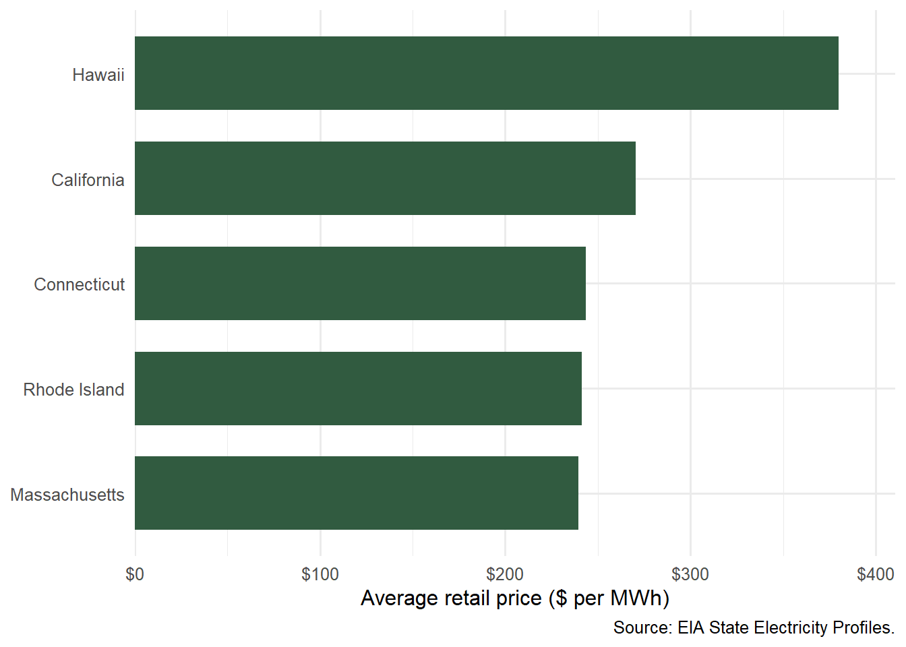
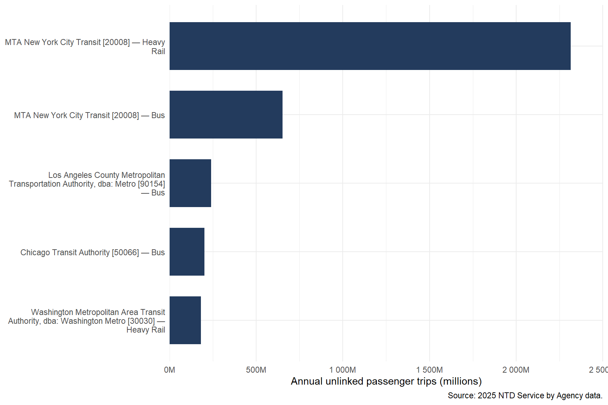
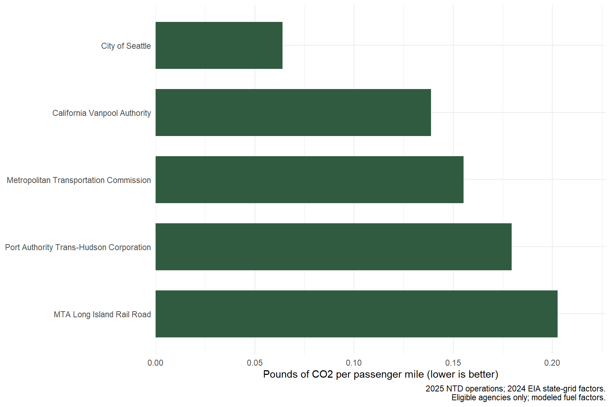
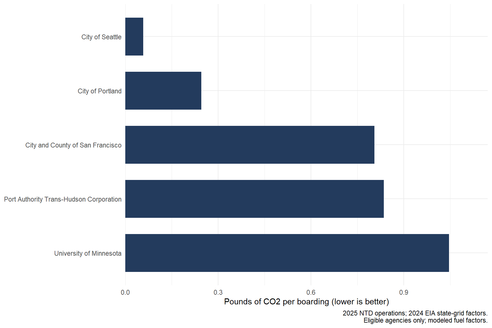
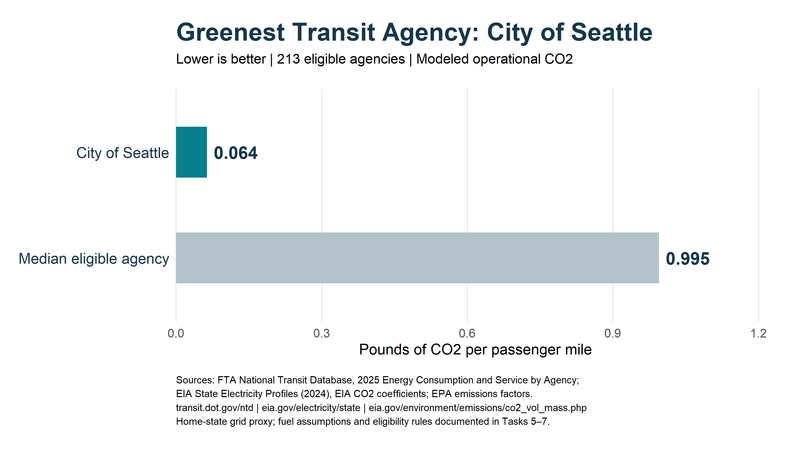
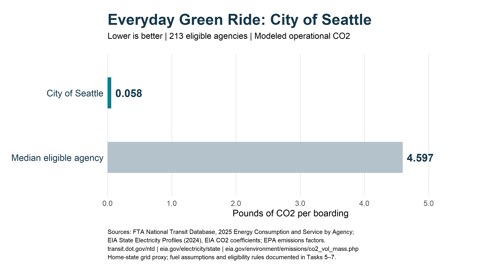
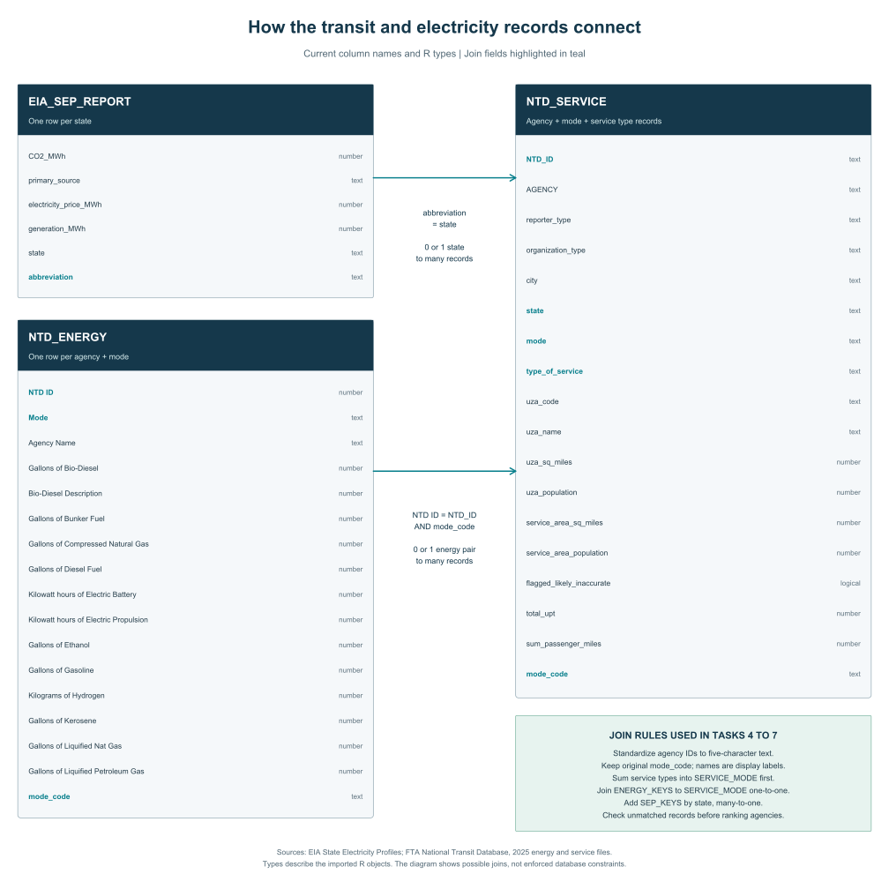

Show the code
library(tidyverse)
library(stringr)
library(httr2)
library(rvest)
library(readxl)
library(fs)
fs::dir_create("data/mp02", recurse = TRUE)Evaluating Public Transit Agencies Using the Green Transit Alliance Value Index
This project covers the electricity and transit energy data for evaluating public transit agencies and their carbon emissions. Additional Tennessee electricity inputs has been obtain from the US Energy Information Administration (EIA). The transit data cover 2025, while the electricity data cover 2024.

library(tidyverse)
library(stringr)
library(httr2)
library(rvest)
library(readxl)
library(fs)
fs::dir_create("data/mp02", recurse = TRUE)# Instructor-provided EIA electricity profile function.
get_eia_sep <- function(state, abbr) {
library(tidyverse)
library(stringr)
library(httr2)
library(rvest)
library(fs)
state_formatted <- str_to_lower(state) |>
str_replace_all("\\s", "")
dir_name <- fs::path("data", "mp02")
file_name <- fs::path(dir_name, state_formatted)
fs::dir_create(dir_name, recurse = TRUE)
if (!fs::file_exists(file_name)) {
BASE_URL <- "https://www.eia.gov"
RESPONSE <- request(BASE_URL) |>
req_url_path(
"electricity",
"state",
state_formatted
) |>
req_headers(
`User-Agent` = "Mozilla/5.0 (Macintosh; Intel Mac OS X 10.15; rv:149.0) Gecko/20100101 Firefox/149.0"
) |>
req_retry(max_tries = 4) |>
req_perform(file_name)
resp_check_status(RESPONSE)
}
TABLE <- read_html(file_name) |>
html_element("table") |>
html_table() |>
mutate(Item = str_to_lower(Item))
if ("U.S. rank" %in% colnames(TABLE)) {
TABLE <- TABLE |>
rename(Rank = `U.S. rank`)
}
CO2_MWh <- TABLE |>
filter(Item == "carbon dioxide (lbs/mwh)") |>
pull(Value) |>
str_replace_all(",", "") |>
as.numeric()
PRIMARY <- TABLE |>
filter(Item == "primary energy source") |>
pull(Rank)
RATE <- TABLE |>
filter(Item == "average retail price (cents/kwh)") |>
pull(Value) |>
as.numeric()
GENERATION_MWh <- TABLE |>
filter(Item == "net generation (megawatthours)") |>
pull(Value) |>
str_replace_all(",", "") |>
as.numeric()
data.frame(
CO2_MWh = CO2_MWh,
primary_source = PRIMARY,
electricity_price_MWh = RATE * 10,
generation_MWh = GENERATION_MWh,
state = state,
abbreviation = abbr
)
}
# Collect all 50 states using the teacher's function.
EIA_SEP_REPORT <- map2(
state.name,
state.abb,
get_eia_sep
) |>
list_rbind()
nrow(EIA_SEP_REPORT)[1] 50I used this excel data EIA Table 3.7 (Excel) for utility-scale generation by state and sector. The same workbook is included in the complete Electric Power Annual ZIP. Table 3.1.A is national and should not be used as Tennessee generation.
In the inspected 2025 edition of Table 3.7, Tennessee is row 46 and the 2024 All Sectors total is C46: 76,167 thousand MWh, or approximately 76.167 million MWh (76.167 TWh). The code below finds the Tennessee row and 2024 column from their labels instead of fixing their positions.
This table supplies generation only. Carbon dioxide intensity, primary energy source, and retail electricity price continue to come from the Tennessee Electricity Profile 2024. The profile reports 76,166,766 MWh, consistent with the rounded generation table.
EIA_YEAR <- 2024L
EIA_GENERATION_URL <- "https://www.eia.gov/electricity/annual/xls/epa_03_07.xlsx"
EIA_GENERATION_FILE <- fs::path("data", "mp02", "epa_03_07.xlsx")
# Download workbook only.
if (!fs::file_exists(EIA_GENERATION_FILE)) {
request(EIA_GENERATION_URL) |>
req_headers(`User-Agent` = "Mozilla/5.0") |>
req_retry(max_tries = 4) |>
req_perform(path = EIA_GENERATION_FILE)
}
generation_raw <- read_excel(
EIA_GENERATION_FILE,
col_names = FALSE,
col_types = "text",
.name_repair = "minimal"
)
# Normalize line breaks and whitespace in the multi-row Excel headings.
generation_cells <- as.matrix(generation_raw)
generation_cells[is.na(generation_cells)] <- ""
generation_cells[] <- str_squish(generation_cells)
header_row <- which(str_detect(
generation_cells[, 1], "Census Division.*State"
))
tennessee_row <- which(generation_cells[, 1] == "Tennessee")
if (length(header_row) != 1L || length(tennessee_row) != 1L) {
stop("Expected one state heading and one Tennessee row in Table 3.7.")
}
year_columns <- which(
generation_cells[header_row, ] == paste("Year", EIA_YEAR)
)
if (length(year_columns) == 0L) {
stop("The requested reporting year is absent from Table 3.7.")
}
# The first year column belongs to the leftmost All Sectors group.
all_sector_col <- min(year_columns)
if (!any(generation_cells[seq_len(header_row), 2] == "All Sectors")) {
stop("Unexpected layout: verify the All Sectors column group.")
}
if (!any(str_detect(generation_cells, fixed("Thousand Megawatthours")))) {
stop("Unexpected generation units: inspect the workbook before converting.")
}
tn_generation_thousand_mwh <- parse_number(
generation_cells[tennessee_row, all_sector_col]
)
stopifnot(
is.finite(tn_generation_thousand_mwh),
tn_generation_thousand_mwh > 0
)
TN_GENERATION <- tibble(
state = "Tennessee",
abbreviation = "TN",
electricity_year = EIA_YEAR,
generation_MWh = tn_generation_thousand_mwh * 1000,
generation_source = EIA_GENERATION_URL,
generation_coverage = "Utility-scale net generation, all sectors"
)
TN_GENERATION# A tibble: 1 × 6
state abbreviation electricity_year generation_MWh generation_source
<chr> <chr> <int> <dbl> <chr>
1 Tennessee TN 2024 76167000 https://www.eia.gov/el…
# ℹ 1 more variable: generation_coverage <chr>stopifnot(
nrow(EIA_SEP_REPORT) == 50L,
!anyDuplicated(EIA_SEP_REPORT$abbreviation)
)
EIA_SEP_REPORT |>
arrange(desc(generation_MWh)) CO2_MWh primary_source electricity_price_MWh generation_MWh state
1 823 Natural gas 97.9 566502688 Texas
2 765 Natural gas 125.3 266119236 Florida
3 659 Natural gas 125.1 241498648 Pennsylvania
4 407 Natural gas 270.4 214191383 California
5 510 Nuclear 122.1 185012935 Illinois
6 747 Natural gas 119.0 142921216 Alabama
7 1005 Natural gas 112.9 142746706 Ohio
8 672 Natural gas 114.0 139805428 Georgia
9 670 Natural gas 116.5 134965396 North Carolina
10 537 Natural gas 196.6 129015493 New York
11 957 Natural gas 141.6 124200090 Michigan
12 634 Natural gas 127.4 116026511 Arizona
13 631 Natural gas 106.2 102698615 Virginia
14 249 Hydroelectric 101.3 102397711 Washington
15 589 Nuclear 109.0 100485416 South Carolina
16 927 Natural gas 88.0 99622835 Louisiana
17 1393 Coal 113.8 97012880 Indiana
18 673 Natural gas 90.9 94069145 Oklahoma
19 794 Natural gas 109.3 77336712 Mississippi
20 804 Nuclear 109.0 76166766 Tennessee
21 699 Wind 93.4 70464148 Iowa
22 1744 Coal 100.7 66950848 Kentucky
23 1456 Coal 110.6 66875710 Missouri
24 1090 Natural gas 127.2 65276344 Wisconsin
25 352 Hydroelectric 111.1 64661249 Oregon
26 960 Natural gas 95.9 61542484 Arkansas
27 507 Natural gas 162.9 60175245 New Jersey
28 958 Natural gas 120.7 58798395 Colorado
29 766 Natural gas 123.5 58595222 Minnesota
30 680 Wind 112.1 57696155 Kansas
31 1912 Coal 110.5 50594818 West Virginia
32 631 Natural gas 114.7 45528427 Nevada
33 541 Natural gas 243.7 44761412 Connecticut
34 1424 Coal 79.3 42557243 North Dakota
35 1724 Coal 91.4 40709150 Wyoming
36 743 Wind 91.8 39697294 New Mexico
37 1082 Coal 90.7 37228950 Nebraska
38 604 Nuclear 150.4 35424816 Maryland
39 1322 Coal 99.7 35133906 Utah
40 969 Coal 108.3 26872883 Montana
41 936 Natural gas 239.4 20914890 Massachusetts
42 318 Wind 108.7 20871994 South Dakota
43 382 Hydroelectric 95.1 20035438 Idaho
44 280 Nuclear 206.1 16942479 New Hampshire
45 487 Natural gas 196.6 14655178 Maine
46 828 Natural gas 241.5 9777026 Rhode Island
47 1426 Petroleum 380.0 9160979 Hawaii
48 1196 Natural gas 221.7 6690506 Alaska
49 1126 Natural gas 135.6 4799212 Delaware
50 8 Hydroelectric 184.1 2258891 Vermont
abbreviation
1 TX
2 FL
3 PA
4 CA
5 IL
6 AL
7 OH
8 GA
9 NC
10 NY
11 MI
12 AZ
13 VA
14 WA
15 SC
16 LA
17 IN
18 OK
19 MS
20 TN
21 IA
22 KY
23 MO
24 WI
25 OR
26 AR
27 NJ
28 CO
29 MN
30 KS
31 WV
32 NV
33 CT
34 ND
35 WY
36 NM
37 NE
38 MD
39 UT
40 MT
41 MA
42 SD
43 ID
44 NH
45 ME
46 RI
47 HI
48 AK
49 DE
50 VT# Supplementary comparison with Tennessee's 2024 ZIP data.
TN_GENERATION_CHECK <- EIA_SEP_REPORT |>
filter(abbreviation == "TN") |>
transmute(
state,
profile_generation_mwh = generation_MWh
) |>
left_join(
TN_GENERATION |>
transmute(
state,
zip_generation_mwh = generation_MWh
),
by = "state"
) |>
mutate(
difference_mwh =
zip_generation_mwh - profile_generation_mwh
)
stopifnot(
nrow(TN_GENERATION_CHECK) == 1L,
!is.na(TN_GENERATION_CHECK$difference_mwh),
abs(TN_GENERATION_CHECK$difference_mwh) <= 500
)
TN_GENERATION_CHECK state profile_generation_mwh zip_generation_mwh difference_mwh
1 Tennessee 76166766 76167000 234I use the utility-scale total. Utility-scale solar is already included in Table 3.7. Table 3.21 separately reports Tennessee’s 2024 small-scale photovoltaic generation as 86 thousand MWh. Keep the utility-scale total for the present dataset; any expanded total should be explicitly labeled and checked for compatibility with the emissions measure. Do not add total photovoltaic generation to Table 3.7 because utility-scale solar is already included.
I use the utility-scale total without adding small-scale solar. Utility-scale solar is already included in Table 3.7.
# Instructor-provided NTD energy function.
load_ntd_energy <- function() {
library(readxl)
library(httr2)
library(tidyverse)
library(fs)
DATA_DIR <- fs::path("data", "mp02")
fs::dir_create(DATA_DIR, recurse = TRUE)
NTD_ENERGY_FILE <- fs::path(
DATA_DIR,
"2025_ntd_energy.xlsx"
)
if (!fs::file_exists(NTD_ENERGY_FILE)) {
request("https://www.transit.dot.gov/") |>
req_url_path(
"sites",
"fta.dot.gov",
"files",
"2026-09",
"2025 Energy Consumption_260806.xlsx"
) |>
req_headers(
`User-Agent` = "Mozilla/5.0 (Macintosh; Intel Mac OS X 10.15; rv:149.0) Gecko/20100101 Firefox/149.0"
) |>
req_perform(NTD_ENERGY_FILE)
}
if (file.info(NTD_ENERGY_FILE)$size < 1e4) {
stop(
"The saved NTD Excel file is incomplete. ",
"Replace it with the manually downloaded workbook."
)
}
to_numeric_fill_0 <- function(x) {
x <- if_else(x == "-", NA, x)
replace_na(as.numeric(x), 0)
}
read_excel(NTD_ENERGY_FILE) |>
select(
-c(
`Reporter Type`,
`Reporting Module`,
`Gallons of Other Fuel`,
`Other Fuel Description`
)
) |>
mutate(
across(
-c(`Agency Name`, Mode, TOS),
to_numeric_fill_0
)
) |>
group_by(`NTD ID`, Mode, `Agency Name`) |>
summarize(
across(where(is.numeric), sum),
.groups = "keep"
) |>
mutate(
ENERGY = sum(c_across(where(is.numeric)))
) |>
filter(ENERGY > 0) |>
select(-ENERGY) |>
ungroup()
}NTD_ENERGY <- load_ntd_energy()
head(NTD_ENERGY)# A tibble: 6 × 16
`NTD ID` Mode `Agency Name` `Gallons of Bio-Diesel` `Bio-Diesel Description`
<dbl> <chr> <chr> <dbl> <dbl>
1 1 DR King County 0 0
2 1 FB King County 0 0
3 1 MB King County 139825 0
4 1 SR King County 0 0
5 1 TB King County 0 0
6 1 VP King County 0 0
# ℹ 11 more variables: `Gallons of Bunker Fuel` <dbl>,
# `Gallons of Compressed Natural Gas` <dbl>, `Gallons of Diesel Fuel` <dbl>,
# `Kilowatt hours of Electric Battery` <dbl>,
# `Kilowatt hours of Electric Propulsion` <dbl>, `Gallons of Ethanol` <dbl>,
# `Gallons of Gasoline` <dbl>, `Kilograms of Hydrogen` <dbl>,
# `Gallons of Kerosene` <dbl>, `Gallons of Liquified Nat Gas` <dbl>,
# `Gallons of Liquified Petroleum Gas` <dbl>load_ntd_service <- function(){
library(httr2)
library(tidyverse)
library(fs)
# Create 'data/mp02' directory if not already present
DATA_DIR <- fs::path("data", "mp02")
fs::dir_create(DATA_DIR, recurse=TRUE)
NTD_SERVICE_FILE <- fs::path(DATA_DIR, "2025_ntd_service.csv")
if(!fs::file_exists(NTD_SERVICE_FILE)){
library(httr2)
request("https://data.transportation.gov/resource/4fir-qbim.csv") |>
req_url_query(`$query`=paste(
"SELECT `_5_digit_ntd_id` AS `NTD_ID`",
"`max_agency` AS `AGENCY`",
"`max_reporter_type` AS `reporter_type`",
"`max_organization_type` AS `organization_type`",
"`max_city` AS `city`",
"`max_state` AS `state`",
"`mode`",
"`type_of_service`",
"`max_primary_uza_code` as `uza_code`",
"`max_primary_uza_name` as `uza_name`",
"`max_primary_uza_area_sq_miles` as `uza_sq_miles`",
"`max_primary_uza_population` as `uza_population`",
"`max_service_area_sq_miles` as `service_area_sq_miles`",
"`max_service_area_population` as `service_area_population`",
"`questionable_record` as `flagged_likely_inaccurate`",
"`sum_unlinked_passenger_trips_upt` as `total_upt`",
"`sum_passenger_miles` WHERE caseless_one_of(`report_year`, '2025') limit 50000",
sep=",")) |>
req_headers(
`User-Agent` = "Mozilla/5.0 (Macintosh; Intel Mac OS X 10.15; rv:149.0) Gecko/20100101 Firefox/149.0") |>
req_perform(NTD_SERVICE_FILE)
}
if(file.info(NTD_SERVICE_FILE)$size < 1e4){
cat("I was unable to download the NTD Service File. Please try again.\n")
stop("Download failed. Please delete the corrupted file by running `unlink('data/mp02/2025_ntd_service.xlsx')` and try again.")
}
read_csv(NTD_SERVICE_FILE) |>
mutate(flagged_likely_inaccurate = !is.na(flagged_likely_inaccurate))
}
NTD_SERVICE <- load_ntd_service()
head(NTD_SERVICE)# A tibble: 6 × 17
NTD_ID AGENCY reporter_type organization_type city state mode
<chr> <chr> <chr> <chr> <chr> <chr> <chr>
1 00001 King County, dba: Ki… Full Reporter City, County or … Seat… WA DR
2 00001 King County, dba: Ki… Full Reporter City, County or … Seat… WA DR
3 00001 King County, dba: Ki… Full Reporter City, County or … Seat… WA FB
4 00001 King County, dba: Ki… Full Reporter City, County or … Seat… WA MB
5 00001 King County, dba: Ki… Full Reporter City, County or … Seat… WA MB
6 00001 King County, dba: Ki… Full Reporter City, County or … Seat… WA SR
# ℹ 10 more variables: type_of_service <chr>, uza_code <chr>, uza_name <chr>,
# uza_sq_miles <dbl>, uza_population <dbl>, service_area_sq_miles <dbl>,
# service_area_population <dbl>, flagged_likely_inaccurate <lgl>,
# total_upt <dbl>, sum_passenger_miles <dbl># Identify the original mode codes in both datasets.
NTD_ENERGY |>
distinct(Mode) |>
arrange(Mode)# A tibble: 17 × 1
Mode
<chr>
1 AR
2 CB
3 CC
4 CR
5 DR
6 FB
7 HR
8 IP
9 LR
10 MB
11 MG
12 RB
13 SR
14 TB
15 TR
16 VP
17 YR NTD_SERVICE |>
distinct(mode) |>
arrange(mode)# A tibble: 17 × 1
mode
<chr>
1 AR
2 CB
3 CC
4 CR
5 DR
6 FB
7 HR
8 IP
9 LR
10 MB
11 MG
12 RB
13 SR
14 TB
15 TR
16 VP
17 YR # Use the same labels in both datasets.
expand_mode <- function(x) {
dplyr::recode_values(
x,
"AR" ~ "Alaska Railroad",
"CB" ~ "Commuter Bus",
"CC" ~ "Cable Car",
"CR" ~ "Commuter Rail",
"DR" ~ "Demand Response",
"DT" ~ "Demand Response Taxi",
"FB" ~ "Ferryboat",
"HR" ~ "Heavy Rail",
"IP" ~ "Inclined Plane",
"JT" ~ "Jitney",
"LR" ~ "Light Rail",
"MB" ~ "Bus",
"MG" ~ "Monorail/Automated Guideway",
"PB" ~ "Publico",
"RB" ~ "Bus Rapid Transit",
"SR" ~ "Streetcar Rail",
"TB" ~ "Trolleybus",
"TR" ~ "Aerial Tramway",
"VP" ~ "Vanpool",
"YR" ~ "Hybrid Rail",
default = "Unknown"
)
}
# Preserve the original codes for checking and later joins.
NTD_ENERGY <- NTD_ENERGY |>
mutate(
mode_code = if ("mode_code" %in% names(NTD_ENERGY)) {
mode_code
} else {
as.character(Mode)
},
Mode = expand_mode(mode_code)
)
NTD_SERVICE <- NTD_SERVICE |>
mutate(
mode_code = if ("mode_code" %in% names(NTD_SERVICE)) {
mode_code
} else {
as.character(mode)
},
mode = expand_mode(mode_code)
)
# Display code-to-name mappings found in the data.
bind_rows(
NTD_ENERGY |> transmute(mode_code, mode_name = Mode),
NTD_SERVICE |> transmute(mode_code, mode_name = mode)
) |>
distinct() |>
arrange(mode_code)# A tibble: 17 × 2
mode_code mode_name
<chr> <chr>
1 AR Alaska Railroad
2 CB Commuter Bus
3 CC Cable Car
4 CR Commuter Rail
5 DR Demand Response
6 FB Ferryboat
7 HR Heavy Rail
8 IP Inclined Plane
9 LR Light Rail
10 MB Bus
11 MG Monorail/Automated Guideway
12 RB Bus Rapid Transit
13 SR Streetcar Rail
14 TB Trolleybus
15 TR Aerial Tramway
16 VP Vanpool
17 YR Hybrid Rail # Identify any codes that still need interpretation.
bind_rows(
NTD_ENERGY |> transmute(mode_code, mode_name = Mode),
NTD_SERVICE |> transmute(mode_code, mode_name = mode)
) |>
filter(mode_name == "Unknown") |>
distinct()# A tibble: 0 × 2
# ℹ 2 variables: mode_code <chr>, mode_name <chr>transit_energy_clean <- NTD_ENERGY |>
select(
-matches("Description$", ignore.case = TRUE)
) |>
rename(
ntd_id = `NTD ID`,
agency_name = `Agency Name`,
mode = Mode
) |>
mutate(
ntd_id = str_pad(
as.character(ntd_id),
width = 5,
side = "left",
pad = "0"
),
mode = as.character(mode)
)
transit_energy_clean |>
select(ntd_id, agency_name, mode) |>
head(10)# A tibble: 10 × 3
ntd_id agency_name mode
<chr> <chr> <chr>
1 00001 King County Demand Response
2 00001 King County Ferryboat
3 00001 King County Bus
4 00001 King County Streetcar Rail
5 00001 King County Trolleybus
6 00001 King County Vanpool
7 00002 Spokane Transit Authority Demand Response
8 00002 Spokane Transit Authority Bus
9 00002 Spokane Transit Authority Vanpool
10 00003 Pierce County Transportation Benefit Area Authority Demand Responseelectricity_clean <- EIA_SEP_REPORT |>
as_tibble() |>
transmute(
state,
state_code = abbreviation,
co2_lbs_per_mwh = CO2_MWh,
primary_energy_source = primary_source,
electricity_price_per_mwh = electricity_price_MWh,
generation_mwh = generation_MWh
)
electricity_clean |>
arrange(desc(co2_lbs_per_mwh)) |>
print(n = 10)# A tibble: 50 × 6
state state_code co2_lbs_per_mwh primary_energy_source electricity_price_pe…¹
<chr> <chr> <dbl> <chr> <dbl>
1 West… WV 1912 Coal 110.
2 Kent… KY 1744 Coal 101.
3 Wyom… WY 1724 Coal 91.4
4 Miss… MO 1456 Coal 111.
5 Hawa… HI 1426 Petroleum 380
6 Nort… ND 1424 Coal 79.3
7 Indi… IN 1393 Coal 114.
8 Utah UT 1322 Coal 99.7
9 Alas… AK 1196 Natural gas 222.
10 Dela… DE 1126 Natural gas 136.
# ℹ 40 more rows
# ℹ abbreviated name: ¹electricity_price_per_mwh
# ℹ 1 more variable: generation_mwh <dbl>expensive_states <- EIA_SEP_REPORT |>
slice_max(
electricity_price_MWh,
n = 5,
with_ties = FALSE
)
ggplot(
expensive_states,
aes(
x = reorder(state, electricity_price_MWh),
y = electricity_price_MWh
)
) +
geom_col(fill = "#315b40", width = 0.7) +
coord_flip() +
scale_y_continuous(
labels = scales::label_dollar(),
expand = expansion(mult = c(0, 0.08))
) +
labs(
x = NULL,
y = "Average retail price ($ per MWh)",
caption = "Source: EIA State Electricity Profiles."
) +
theme_minimal(base_size = 12)
Let us first define ‘dirtiest.’ It means the most CO₂ emitted per MWh of electricity generated. Looking at these five states, a common thread emerges: Coal is highly used in these states, while Hawaii relies on petroleum. Each has its own pollution story but coal trumps the top four states.
dirty_states <- EIA_SEP_REPORT |>
slice_max(CO2_MWh, n = 5, with_ties = FALSE) |>
arrange(desc(CO2_MWh)) |>
transmute(
State = state,
`Primary energy source` = primary_source,
`CO2 emissions (lbs/MWh)` = CO2_MWh
)
knitr::kable(
dirty_states,
format.args = list(big.mark = ","),
caption = "Five states with the highest electricity CO₂ intensity."
)| State | Primary energy source | CO2 emissions (lbs/MWh) |
|---|---|---|
| West Virginia | Coal | 1,912 |
| Kentucky | Coal | 1,744 |
| Wyoming | Coal | 1,724 |
| Missouri | Coal | 1,456 |
| Hawaii | Petroleum | 1,426 |
Across the 50 states, electricity generation emits approximately 784.9 pounds of CO₂ per MWh. This average weights each state’s emissions intensity by its annual net generation, so states producing more electricity contribute more to the result.
Petroleum takes the smallest place at the table, leading only in Hawaii, while Hydroelectric power and wind follow. Interestingly, none of these states ranked among the nation’s ten most populous in 2025. (Source: U.S. Census Bureau, July 1, 2025 estimates.)
rare_sources <- EIA_SEP_REPORT |>
count(primary_source, name = "states_using_source") |>
arrange(states_using_source, primary_source) |>
slice_head(n = 3)
rare_source_states <- EIA_SEP_REPORT |>
inner_join(rare_sources, by = "primary_source") |>
arrange(states_using_source, primary_source, state) |>
transmute(
`Primary energy source` = primary_source,
`Number of states` = states_using_source,
State = state,
`Retail electricity price ($/MWh)` =
scales::dollar(electricity_price_MWh, accuracy = 0.01)
)
knitr::kable(
rare_source_states,
caption = "The three least common primary electricity sources and the states using them."
)| Primary energy source | Number of states | State | Retail electricity price ($/MWh) |
|---|---|---|---|
| Petroleum | 1 | Hawaii | $380.00 |
| Hydroelectric | 4 | Idaho | $95.10 |
| Hydroelectric | 4 | Oregon | $111.10 |
| Hydroelectric | 4 | Vermont | $184.10 |
| Hydroelectric | 4 | Washington | $101.30 |
| Wind | 4 | Iowa | $93.40 |
| Wind | 4 | Kansas | $112.10 |
| Wind | 4 | New Mexico | $91.80 |
| Wind | 4 | South Dakota | $108.70 |
Texas emits 1.53 times as much CO₂ per MWh as New York. Equivalently, New York’s electricity emissions intensity is 34.8% lower than Texas’s. For every MWh of electricity generated, New York releases 34.8% less CO₂ than Texas. On paper, NY state is greener than Texas, but there is a contrast in population density.
Curiously, NY has less carbon emission by about 35%, and also about 35% less population than Texas. Using July 1, 2025 Census estimates—20,002,427 residents in New York and 31,709,821 in Texas—New York’s population was 36.9% smaller than Texas’s.
Liquefied natural gas (LNG) is used by just one transit agency is the least commonly used fuel. These data show how rare LNG use is, but do not explain why agencies choose other options. Bunker fuel and kerosene have no recorded positive consumption.
Bunker Fuel and Kerosene have no recorded positive consumption in the dataset.
Among fuels with positive recorded consumption, the least commonly used are Liquified Nat Gas, each used by 1 agencies.
This comparison counts distinct agencies using each fuel and excludes “Other Fuel,” which the instructor’s loader removes.
It is a no-brainer that New York’s MTA leads the list, with heavy rail carrying the most passenger boardings, followed by its bus service. Third on the list is Los Angeles County Metropolitan Transportation Authority’s service and anyone who has traveled in New York City and Los Angeles knows the stark difference between the two states transit services. NYC wins.
service_upt <- NTD_SERVICE |>
group_by(NTD_ID, AGENCY, mode) |>
summarise(
total_upt = if (all(is.na(total_upt))) {
NA_real_
} else {
sum(total_upt, na.rm = TRUE)
},
.groups = "drop"
)
top_services <- service_upt |>
filter(is.finite(total_upt), total_upt > 0) |>
slice_max(total_upt, n = 5, with_ties = FALSE) |>
mutate(
service_label = paste0(
AGENCY, " [", NTD_ID, "] — ", mode
)
)
ggplot(
top_services,
aes(
x = reorder(service_label, total_upt),
y = total_upt
)
) +
geom_col(fill = "#233B5D", width = 0.7) +
coord_flip() +
scale_x_discrete(
labels = function(x) str_wrap(x, width = 45)
) +
scale_y_continuous(
labels = scales::label_number(
scale = 1e-6,
suffix = "M"
),
expand = expansion(mult = c(0, 0.08))
) +
labs(
x = NULL,
y = "Annual unlinked passenger trips (millions)",
caption = "Source: 2025 NTD Service by Agency data."
) +
theme_minimal(base_size = 11)
All 50 states are represented in the service dataset. This check concerns the 50 states; the District of Columbia and territories are outside that comparison.
Service types are combined by agency and mode to match the energy data. The tables are joined using agency IDs and mode codes, with electricity data added by state abbreviation.
sum_complete <- function(x) {
if (anyNA(x)) NA_real_ else sum(x)
}
ENERGY_KEYS <- NTD_ENERGY |>
select(-matches("Description$", ignore.case = TRUE)) |>
mutate(
ntd_id = str_pad(as.character(`NTD ID`), 5, pad = "0"),
mode_code = str_trim(mode_code)
)
SERVICE_KEYS <- NTD_SERVICE |>
mutate(
ntd_id = str_pad(as.character(NTD_ID), 5, pad = "0"),
mode_code = str_trim(mode_code),
state = str_to_upper(str_trim(state))
)
# A mode must have one state assignment before it receives a grid factor.
state_conflicts <- SERVICE_KEYS |>
group_by(ntd_id, mode_code) |>
summarise(states = n_distinct(state, na.rm = FALSE), .groups = "drop") |>
filter(states != 1L)
stopifnot(nrow(state_conflicts) == 0L)
SERVICE_MODE <- SERVICE_KEYS |>
group_by(ntd_id, mode_code) |>
summarise(
agency_name = first(AGENCY),
mode = first(mode),
state_code = first(state),
total_upt = sum_complete(total_upt),
passenger_miles = sum_complete(sum_passenger_miles),
flagged = any(flagged_likely_inaccurate),
.groups = "drop"
)
SEP_KEYS <- EIA_SEP_REPORT |>
as_tibble() |>
transmute(state_code = abbreviation, primary_source,
co2_lbs_per_mwh = CO2_MWh)
stopifnot(
!anyDuplicated(ENERGY_KEYS[c("ntd_id", "mode_code")]),
!anyDuplicated(SERVICE_MODE[c("ntd_id", "mode_code")]),
!anyDuplicated(SEP_KEYS$state_code)
)This many-to-one state join adds each state’s primary energy source without duplicating passenger trips.
nuclear_upt <- SERVICE_MODE |>
left_join(SEP_KEYS, by = "state_code", relationship = "many-to-one") |>
filter(str_to_lower(primary_source) == "nuclear") |>
summarise(total_upt = sum_complete(total_upt))
knitr::kable(nuclear_upt, format.args = list(big.mark = ","))| total_upt |
|---|
| 561,675,933 |
Last semester, I worked with Metropolitan Statistical Area data. Here, I use NTD’s primary urbanized area (UZA) as a proxy for metro area, though the geographic boundaries differ. Missing or conflicting UZA assignments are reported separately and excluded from this ranking.
UZA_KEYS <- SERVICE_KEYS |>
group_by(ntd_id, mode_code) |>
summarise(
uza_count = n_distinct(uza_code, na.rm = TRUE),
uza_code = first(uza_code[!is.na(uza_code)]),
uza_name = first(uza_name[!is.na(uza_name)]),
.groups = "drop"
)
bio_uza <- ENERGY_KEYS |>
left_join(UZA_KEYS, by = c("ntd_id", "mode_code"),
relationship = "one-to-one")
bio_uza |>
summarise(unassigned_or_conflicting_biodiesel_gallons =
sum(`Gallons of Bio-Diesel`[
is.na(uza_count) | uza_count != 1L | is.na(uza_code)
], na.rm = TRUE)) |>
knitr::kable()| unassigned_or_conflicting_biodiesel_gallons |
|---|
| 0 |
top_biodiesel_uza <- bio_uza |>
filter(uza_count == 1L, !is.na(uza_code)) |>
group_by(uza_code, uza_name) |>
summarise(biodiesel_gallons = sum_complete(`Gallons of Bio-Diesel`),
.groups = "drop") |>
slice_max(biodiesel_gallons, n = 1, with_ties = TRUE)
knitr::kable(top_biodiesel_uza, format.args = list(big.mark = ","))| uza_code | uza_name | biodiesel_gallons |
|---|---|---|
| 51445 | Los Angeles–Long Beach–Anaheim, CA | 9,466,431 |
These estimates cover CO₂ from vehicle fuel combustion, including biofuels, and purchased electricity. They exclude manufacturing, fuel production, and other greenhouse gases. Electricity emissions use 2024 home-state grid factors for 2025 operations, which may differ from an agency’s actual power supply.
Fuel conversions follow EIA and EPA guidance. Alternative CNG and biodiesel assumptions test how uncertain units and blends affect results.
Award rankings exclude agencies using hydrogen or Other Fuel, and those with entirely blank energy records. Individual blank fuel entries follow the instructor’s zero-fill convention, though missing data may not mean zero consumption.
KG_TO_LB <- 1 / 0.45359237
CNG_GGE_FACTOR <- 116.65 * 0.114
CNG_DGE_FACTOR <- 116.65 * 0.138
# Preserve all energy rows; unmatched service and state data stay visible.
MODE_EMISSIONS <- ENERGY_KEYS |>
left_join(SERVICE_MODE, by = c("ntd_id", "mode_code"),
suffix = c("_energy", ""), relationship = "one-to-one") |>
left_join(SEP_KEYS, by = "state_code", relationship = "many-to-one") |>
mutate(
electricity_kwh = `Kilowatt hours of Electric Battery` +
`Kilowatt hours of Electric Propulsion`,
electricity_co2_lbs = if_else(
electricity_kwh == 0, 0,
electricity_kwh / 1000 * co2_lbs_per_mwh
),
combustion_co2_lbs =
`Gallons of Bio-Diesel` * 22.45 +
`Gallons of Bunker Fuel` * 24.78 +
`Gallons of Compressed Natural Gas` * CNG_DGE_FACTOR +
`Gallons of Diesel Fuel` * 22.45 +
`Gallons of Ethanol` * 5.75 * KG_TO_LB +
`Gallons of Gasoline` * 18.73 +
`Gallons of Kerosene` * 21.78 +
`Gallons of Liquified Nat Gas` * 4.50 * KG_TO_LB +
`Gallons of Liquified Petroleum Gas` * 12.68,
total_co2_lbs = combustion_co2_lbs + electricity_co2_lbs,
alternative_co2_lbs = total_co2_lbs -
`Gallons of Compressed Natural Gas` *
(CNG_DGE_FACTOR - CNG_GGE_FACTOR) -
`Gallons of Bio-Diesel` * (22.45 - 9.45 * KG_TO_LB)
)
stopifnot(nrow(MODE_EMISSIONS) == nrow(ENERGY_KEYS))
# Show unmatched records rather than silently dropping them.
join_audit <- tibble(
check = c("Energy pairs without service", "Service pairs without energy",
"Service pairs without a state electricity profile"),
pairs = c(
nrow(anti_join(ENERGY_KEYS, SERVICE_MODE,
by = c("ntd_id", "mode_code"))),
nrow(anti_join(SERVICE_MODE, ENERGY_KEYS,
by = c("ntd_id", "mode_code"))),
nrow(anti_join(SERVICE_MODE, SEP_KEYS, by = "state_code"))
)
)
knitr::kable(join_audit, caption = "Coverage checks before agency rankings.")| check | pairs |
|---|---|
| Energy pairs without service | 0 |
| Service pairs without energy | 2402 |
| Service pairs without a state electricity profile | 98 |
MODE_EMISSIONS |>
select(ntd_id, agency_name, mode, state_code,
co2_lbs_per_mwh, total_co2_lbs, alternative_co2_lbs) |>
slice_head(n = 10) |>
knitr::kable(digits = 1,
caption = "Example agency–mode operational CO₂ estimates (pounds).")| ntd_id | agency_name | mode | state_code | co2_lbs_per_mwh | total_co2_lbs | alternative_co2_lbs |
|---|---|---|---|---|---|---|
| 00001 | King County, dba: King County Metro | Demand Response | WA | 249 | 24361514.8 | 24361514.8 |
| 00001 | King County, dba: King County Metro | Ferryboat | WA | 249 | 6468518.5 | 6468518.5 |
| 00001 | King County, dba: King County Metro | Bus | WA | 249 | 211031651.6 | 210805650.1 |
| 00001 | King County, dba: King County Metro | Streetcar Rail | WA | 249 | 523880.6 | 523880.6 |
| 00001 | King County, dba: King County Metro | Trolleybus | WA | 249 | 2854414.2 | 2854414.2 |
| 00001 | King County, dba: King County Metro | Vanpool | WA | 249 | 8767519.7 | 8767519.7 |
| 00002 | Spokane Transit Authority | Demand Response | WA | 249 | 6521720.0 | 6521720.0 |
| 00002 | Spokane Transit Authority | Bus | WA | 249 | 27327384.8 | 27327384.8 |
| 00002 | Spokane Transit Authority | Vanpool | WA | 249 | 1096810.1 | 1096810.1 |
| 00003 | Pierce County Transportation Benefit Area Authority, dba: Pierce Transit | Demand Response | WA | 249 | 6927184.8 | 6887410.9 |
I compare each agency’s emissions with its trips and passenger miles, using matching services. Agencies with incomplete or flagged records, fuels this model cannot fully assess, or no recorded trips are excluded from awards.
# Inspect original energy cells before the instructor's zero filling.
energy_source <- readxl::read_excel("data/mp02/2025_ntd_energy.xlsx")
source_energy_cols <- names(energy_source)[
str_detect(names(energy_source), "^(Gallons of |Kilowatt hours of |Kilograms of )")
]
source_numeric <- energy_source |>
mutate(across(all_of(source_energy_cols),
~ suppressWarnings(as.numeric(.x))))
ENERGY_QUALITY <- source_numeric |>
mutate(ntd_id = str_pad(as.character(`NTD ID`), 5, pad = "0")) |>
group_by(ntd_id) |>
summarise(
# Follow the instructor for individual blank fuel cells (treated as zero).
# An entirely blank energy row is insufficient evidence of zero use.
uncertain_energy = any(if_all(all_of(source_energy_cols), is.na)),
negative_energy = any(if_any(all_of(source_energy_cols), ~ .x < 0), na.rm = TRUE),
other_fuel = any(`Gallons of Other Fuel` > 0, na.rm = TRUE),
.groups = "drop"
)
# Start from the union of keys so omissions on either side affect eligibility.
ALL_MODE_KEYS <- full_join(
ENERGY_KEYS |> distinct(ntd_id, mode_code) |> mutate(has_energy = TRUE),
SERVICE_MODE |> distinct(ntd_id, mode_code) |> mutate(has_service = TRUE),
by = c("ntd_id", "mode_code"), relationship = "one-to-one"
)
AGENCY_COVERAGE <- ALL_MODE_KEYS |>
group_by(ntd_id) |>
summarise(complete_modes = all(!is.na(has_energy) & !is.na(has_service)),
.groups = "drop")
AGENCY_METRICS <- MODE_EMISSIONS |>
group_by(ntd_id) |>
summarise(
agency_name = first(`Agency Name`),
total_upt = sum_complete(total_upt),
passenger_miles = sum_complete(passenger_miles),
total_co2_lbs = sum_complete(total_co2_lbs),
alternative_co2_lbs = sum_complete(alternative_co2_lbs),
flagged = any(is.na(flagged) | flagged),
missing_grid = any(is.na(co2_lbs_per_mwh)),
hydrogen_used = any(`Kilograms of Hydrogen` > 0),
.groups = "drop"
) |>
left_join(AGENCY_COVERAGE, by = "ntd_id", relationship = "one-to-one") |>
left_join(ENERGY_QUALITY, by = "ntd_id", relationship = "one-to-one") |>
mutate(
co2_lbs_per_upt = if_else(total_upt > 0, total_co2_lbs / total_upt, NA_real_),
co2_lbs_per_passenger_mile = if_else(
passenger_miles > 0, total_co2_lbs / passenger_miles, NA_real_
),
alternative_lbs_per_passenger_mile = if_else(
passenger_miles > 0, alternative_co2_lbs / passenger_miles, NA_real_
),
eligible_quality = complete_modes & !flagged & !missing_grid &
!hydrogen_used & !uncertain_energy & !negative_energy & !other_fuel &
is.finite(total_co2_lbs) & total_co2_lbs > 0 &
is.finite(total_upt) & total_upt > 0 &
is.finite(passenger_miles) & passenger_miles > 0
)
# Baseline excludes very small agencies from award comparisons.
MIN_UPT <- 1000000
MIN_PASSENGER_MILES <- 1000000
AWARD_POOL <- AGENCY_METRICS |>
filter(eligible_quality, total_upt >= MIN_UPT,
passenger_miles >= MIN_PASSENGER_MILES)
AGENCY_METRICS |>
summarise(agencies_assessed = n(),
quality_eligible = sum(eligible_quality, na.rm = TRUE),
award_eligible = nrow(AWARD_POOL)) |>
knitr::kable(caption = "Coverage of the agency comparison.")| agencies_assessed | quality_eligible | award_eligible |
|---|---|---|
| 522 | 416 | 213 |
if (nrow(AWARD_POOL) == 0L) {
stop("No agencies meet the stated quality and size rules. Inspect ENERGY_QUALITY and join_audit before changing the rules.")
}
AWARD_POOL |>
slice_min(co2_lbs_per_passenger_mile, n = 10, with_ties = FALSE) |>
select(agency_name, total_upt, passenger_miles,
co2_lbs_per_upt, co2_lbs_per_passenger_mile) |>
knitr::kable(digits = 3,
caption = "Ten lowest-emission eligible agencies per passenger mile.")| agency_name | total_upt | passenger_miles | co2_lbs_per_upt | co2_lbs_per_passenger_mile |
|---|---|---|---|---|
| City of Seattle | 2292743 | 2063469 | 0.058 | 0.064 |
| California Vanpool Authority | 3165914 | 99336553 | 4.358 | 0.139 |
| Metropolitan Transportation Commission | 1118893 | 61803637 | 8.577 | 0.155 |
| Port Authority Trans-Hudson Corporation | 64279458 | 298848234 | 0.835 | 0.180 |
| MTA Long Island Rail Road | 102199645 | 2360919694 | 4.680 | 0.203 |
| Central Puget Sound Regional Transit Authority | 50934512 | 509340680 | 2.061 | 0.206 |
| Metro-North Commuter Railroad Company, dba: MTA Metro-North Railroad | 78485039 | 1900711241 | 5.262 | 0.217 |
| Peninsula Corridor Joint Powers Board | 11011874 | 213306976 | 4.419 | 0.228 |
| City of Portland | 4111090 | 4185541 | 0.246 | 0.242 |
| Antelope Valley Transit Authority | 1741324 | 18285123 | 3.540 | 0.337 |
AWARD_POOL |>
slice_min(co2_lbs_per_upt, n = 10, with_ties = FALSE) |>
select(agency_name, co2_lbs_per_upt, co2_lbs_per_passenger_mile) |>
knitr::kable(digits = 3,
caption = "Ten lowest-emission eligible agencies per boarding.")| agency_name | co2_lbs_per_upt | co2_lbs_per_passenger_mile |
|---|---|---|
| City of Seattle | 0.058 | 0.064 |
| City of Portland | 0.246 | 0.242 |
| City and County of San Francisco | 0.805 | 0.417 |
| Port Authority Trans-Hudson Corporation | 0.835 | 0.180 |
| University of Minnesota | 1.046 | 0.556 |
| University of California, Davis | 1.131 | 0.532 |
| University of Kansas | 1.205 | 1.277 |
| North Carolina State University | 1.276 | 0.840 |
| City of Cincinnati | 1.323 | 1.247 |
| University of Georgia | 1.358 | 0.703 |
Two awards recognize eligible agencies with at least one million annual boardings and one million passenger miles, using thresholds set for this project.
Greenest Transit Agency: Lowest CO₂ emissions per passenger mile.
Everyday Green Ride Award (custom): Lowest CO₂ emissions per boarding, a measure that can favor shorter trips.
greenest_winners <- AWARD_POOL |>
slice_min(co2_lbs_per_passenger_mile, n = 1, with_ties = TRUE)
everyday_winners <- AWARD_POOL |>
slice_min(co2_lbs_per_upt, n = 1, with_ties = TRUE)
award_results <- bind_rows(
greenest_winners |>
transmute(Award = "Greenest Transit Agency", Agency = agency_name,
Metric = "lbs CO2 per passenger mile",
Value = co2_lbs_per_passenger_mile),
everyday_winners |>
transmute(Award = "Everyday Green Ride Award", Agency = agency_name,
Metric = "lbs CO2 per boarding", Value = co2_lbs_per_upt)
)
knitr::kable(award_results, digits = 3, caption = "Project award winners.")| Award | Agency | Metric | Value |
|---|---|---|---|
| Greenest Transit Agency | City of Seattle | lbs CO2 per passenger mile | 0.064 |
| Everyday Green Ride Award | City of Seattle | lbs CO2 per boarding | 0.058 |
# Check whether the alternative fuel-factor scenario changes either winner.
alternative_greenest <- AWARD_POOL |>
slice_min(alternative_lbs_per_passenger_mile, n = 1, with_ties = TRUE)
alternative_everyday <- AWARD_POOL |>
mutate(alternative_lbs_per_upt = alternative_co2_lbs / total_upt) |>
slice_min(alternative_lbs_per_upt, n = 1, with_ties = TRUE)
award_sensitivity <- tibble(
Award = c("Greenest Transit Agency", "Everyday Green Ride Award"),
same_winners_under_alternative_factors = c(
setequal(greenest_winners$ntd_id, alternative_greenest$ntd_id),
setequal(everyday_winners$ntd_id, alternative_everyday$ntd_id)
)
)
knitr::kable(award_sensitivity, caption = "Fuel-factor scenario check.")| Award | same_winners_under_alternative_factors |
|---|---|
| Greenest Transit Agency | TRUE |
| Everyday Green Ride Award | TRUE |
The Greenest Transit Agency award goes to City of Seattle. The custom Everyday Green Ride Award goes to City of Seattle. The winners stayed the same under the alternative CNG and biodiesel assumptions, but other modeling choices could affect the rankings
plot_greenest <- AWARD_POOL |>
slice_min(co2_lbs_per_passenger_mile, n = 5, with_ties = FALSE)
ggplot(plot_greenest,
aes(x = reorder(agency_name, -co2_lbs_per_passenger_mile),
y = co2_lbs_per_passenger_mile)) +
geom_col(fill = "#315b40", width = 0.7) +
coord_flip() +
scale_x_discrete(labels = function(x) str_wrap(x, 40)) +
scale_y_continuous(expand = expansion(mult = c(0, 0.12))) +
labs(x = NULL, y = "Pounds of CO2 per passenger mile (lower is better)",
caption = "2025 NTD operations; 2024 EIA state-grid factors.\nEligible agencies only; modeled fuel factors.") +
theme_minimal(base_size = 11)
plot_everyday <- AWARD_POOL |>
slice_min(co2_lbs_per_upt, n = 5, with_ties = FALSE)
ggplot(plot_everyday,
aes(x = reorder(agency_name, -co2_lbs_per_upt),
y = co2_lbs_per_upt)) +
geom_col(fill = "#233B5D", width = 0.7) +
coord_flip() +
scale_x_discrete(labels = function(x) str_wrap(x, 40)) +
scale_y_continuous(expand = expansion(mult = c(0, 0.12))) +
labs(x = NULL, y = "Pounds of CO2 per boarding (lower is better)",
caption = "2025 NTD operations; 2024 EIA state-grid factors.\nEligible agencies only; modeled fuel factors.") +
theme_minimal(base_size = 11)
[28 October 2026, NYC ] — The City of Seattle has been officially named the winner of both the Greenest Transit Agency award and the custom Everyday Green Ride Award by organizers of the Green Energy Use. These victories mark a watershed moment for the municipality’s public transit framework, positioning the local agency at the forefront of nationwide sustainable mobility efforts.
Who: City of Seattle
What: The Greenest Transit Agency award (Measured in pounds of CO2 per passenger mile) and the custom Everyday Green Ride Award (Measured in pounds of CO2 per boarding).These awards program measure and evaluate transit agencies to determine leadership in low carbon emissions.
When: The analysis uses 2025 transit data and 2024 electricity data.
Why: Seattle had the lowest modeled CO₂ emissions per passenger mile and per boarding among eligible agencies.The city’s impressive low carbon emission results underlies the usage of alternative fuel such as compressed natural gas and biodiesel.
The measurement used to tally the winners answer this question: For every single mile a passenger is carried, how many pounds of carbon dioxide are put into the air? Lower results mean a cleaner, more efficient ride. A climate-friendly transit factors in both the size of the journey (how far passengers traveled) and the modeled CO₂ emissions by the buses or trains.
Based on the official data table, the winner is compared to the median agency. In the Greenest Transit Agency, Seattle won because the city’s transit emissions (0.064 pounds) intensity is 93.58% lower than the median agency 0.995 pounds of CO₂ per passenger mile.
| Award | Agency | Winner (lbs CO2) | Median (lbs CO2) | Below median (%) | Unit |
|---|---|---|---|---|---|
| Greenest Transit Agency | City of Seattle | 0.064 | 0.995 | 93.580 | Pounds of CO2 per passenger mile |
| Everyday Green Ride Award | City of Seattle | 0.058 | 4.597 | 98.749 | Pounds of CO2 per boarding |

This award looks into total operational carbon dioxide divided by boarding. The term “boarding” simply counts every time a person steps onto a bus or train. If a passenger goes to work by bus and then subway, the analysis counts this commute as 2 boardings. Essentially, this metric takes the modeled CO₂ emissions of the transit system and divides it evenly by the total number of passenger rides given.
Seattle won again because of Seattle’s modeled emissions were 0.058 pounds of CO₂ per boarding, 98.75% below the eligible-agency median of 4.597

The recognition awarded to the City of Seattle applies specifically to it as an individual National Transit Database (NTD) reporter rather than the entirety of the region’s transit landscape. Under the framework of this evaluation, the City of Seattle operates as a distinct reporting entity separate from other regional providers like King County Metro and Sound Transit. Consequently, performance metrics and awards do not encompass all public or private transit services operating within the broader Seattle metropolitan area.
There are three sets of information used on this project: the Electricity information (EIA_SEP_REPORT), Transit energy use (NTD_ENERGY) and the Transit service information (NTD_SERVICE). The agency’s ID and transportation type link its energy use to its service information. In other words, one could connect a transit agency’s electric bus electricity use, passenger miles, and the pollution from electricity in its state to help estimate pollution per passenger mile.

This award recognizes the agency with the most passenger miles among agencies at or below the median CO₂ emissions per passenger mile.
# Custom metric: greatest passenger miles among agencies with CO2 intensity
# at or below the median of the same eligible comparison pool.
# This rewards scale plus comparatively low intensity, rather than choosing
# another award based only on the smallest emissions ratio.
scale_intensity_cutoff <- median(AWARD_POOL$co2_lbs_per_passenger_mile)
SCALE_AWARD_POOL <- AWARD_POOL |>
filter(co2_lbs_per_passenger_mile <= scale_intensity_cutoff)
scale_winners <- SCALE_AWARD_POOL |>
slice_max(passenger_miles, n = 1, with_ties = TRUE)
scale_winners |>
transmute(
Agency = agency_name,
`Passenger miles delivered` = passenger_miles,
`CO2 (lbs per passenger mile)` = co2_lbs_per_passenger_mile,
`Eligible-pool median intensity` = scale_intensity_cutoff,
`Below median intensity (%)` =
100 * (1 - co2_lbs_per_passenger_mile / scale_intensity_cutoff)
) |>
knitr::kable(digits = 3,
format.args = list(big.mark = ","),
caption = "Custom award: most passenger miles at or below median emissions intensity.")| Agency | Passenger miles delivered | CO2 (lbs per passenger mile) | Eligible-pool median intensity | Below median intensity (%) |
|---|---|---|---|---|
| New Jersey Transit Corporation | 2,682,481,071 | 0.422 | 0.995 | 57.607 |
# Check whether changing the fuel-factor scenario changes the winner.
alternative_cutoff <- median(AWARD_POOL$alternative_lbs_per_passenger_mile)
alternative_scale_winners <- AWARD_POOL |>
filter(alternative_lbs_per_passenger_mile <= alternative_cutoff) |>
slice_max(passenger_miles, n = 1, with_ties = TRUE)
tibble(
check = "Same scale-award winner under alternative fuel factors",
passed = setequal(scale_winners$ntd_id, alternative_scale_winners$ntd_id)
) |>
knitr::kable()| check | passed |
|---|---|
| Same scale-award winner under alternative fuel factors | TRUE |
All analytical conclusions were based on my own analysis of the electricity and transit data and the sources cited in this report. Gemini was used to assist with R code troubleshooting and debugging of persistently malfunctioning codes.
EIA was used to obtain specific data on Tennessee which was unavailable on the dataset originally provided. US Census on population 2025 was also obtain to highlight some data analysis.